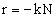
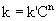
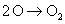
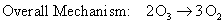
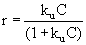

|
There are several functions of UV radiation in UPW disinfection systems. Wavelengths 254 nm and 185 nm are primarily responsible for different treatments, as summarized by DeGenova (2001): |
Table 2. UV Treatment Applications
|
|
|
|
Primary
Wavelength (nm) |
Function |
|
254 |
Bacterial Disinfection |
|
254 |
Ozone
Decomposition |
|
185 |
TOC Oxidation |
Bacterial DisinfectionEvery known living organism contains genetic material (DNA and/or RNA). DNA will absorb energy when exposed to UV-C range UV, as shown on Figure 3. This causes photochemical alterations to nucleic acids and damages the cell’s ability to reproduce. This mode of inactivation follows first-order disinfection kinetics presented by the AWWA (1990) from Chick and Watson; |
|
 |
(2)
|
where: r = rate of inactivation [(organisms killed)/volume/time] N = concentration of viable organisms k = rate constant of inactivation, further defined as: |
|
 |
(3)
|
where: C = disinfectant concentration k’ = rate constant independent of disinfectant concentration n = coefficient of dilution |
|
For UV radiation kinetics, disinfectant concentration refers to UV intensity, expressed as energy per unit of surface area. The SI unit for UV intensity, also known as irradiance, is W/m2, but is commonly found as mW/cm2.
Ozone DecompositionUV light is used to eliminate ozone (O3) from water, e.g. after the UPW polishing system. Ozone absorbs UV 254 nm by the following mechanism: |
|
|
(4)
|
 |
(5)
|
 |
(6)
TOC OxidationTotal Organic Carbon (TOC) Oxidation methods utilize ultraviolet energy to inactivate molecular bonds. UV radiation provides two TOC oxidation mechanisms, described by DeGenova (2001). The first is by direct photolysis using 185 nm UV light, which produces 154 kcal of energy. Bonds with weaker dissociation energies will break apart when these UV photons are absorbed directly. Below is a table summarizing the effects of 185 nm UV light on carbon bonds. |
Table 3. Effect of UV 185 nm on TOC
|
Carbon-Carbon bond |
Dissociation energy (kcal/mol) |
Result with 185nm UV light |
|
single |
82.6 |
broken |
|
double |
145.8 |
broken |
|
triple |
199.6 |
not broken |
|
The second mechanism is the indirect formation of radicals in solution, such as *OH. These highly reactive radical compounds execute TOC oxidation by reacting with organic molecules. Bolton (2004) of The International Ultraviolet Association (IUVA) also mentions that 185 nm UV lamp emissions to the air can generate ozone. Inside the reactor, UV 254 nm will decompose the ozone as well as perform bacterial inactivation. To stop ozone formation, a nitrogen atmosphere can be used to prevent oxygen from flowing through the UV reactor.
The kinetics for TOC oxidation varies between first-order for low concentrations of organic compounds and zero-order for higher concentrations. The inactivation rate is (DeGenova, 2001): |
|
 |
(7)